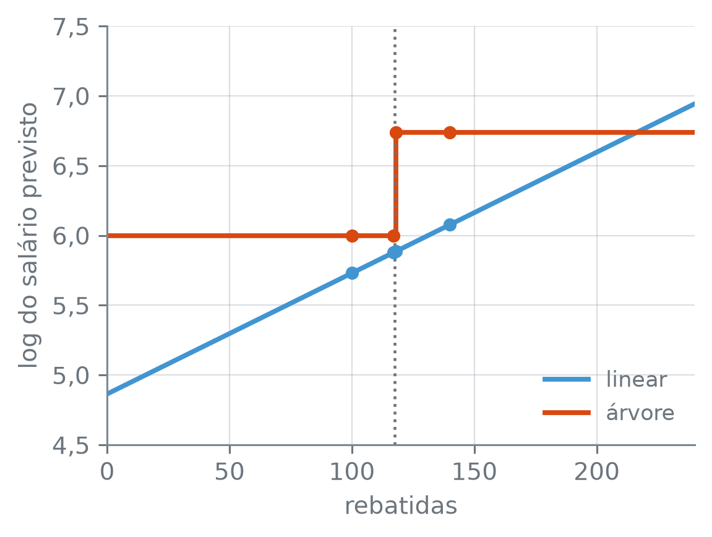

numero_br = lambda valor, casas=2: (
f"{valor:,.{casas}f}".replace(",", "_").replace(".", ",").replace("_", ".")
.replace("-", "−")
)Árvores contra Modelos Lineares
Nota
Esta seção corresponde à seção 8.1.3 de James et al. (2023).
Um jogador de beisebol com 6 anos de liga faz uma rebatida a mais na temporada. Quanto muda o salário que um modelo prevê para ele? A regressão linear dá sempre a mesma resposta, qualquer que seja o número de rebatidas que ele já tinha. A árvore de regressão responde “nada” quase sempre e “um salto” quando a rebatida a mais faz o jogador atravessar um corte. As duas preveem \(Y\) a partir de \(X_1, \dots, X_p\), com duas suposições opostas sobre a forma de \(f\). Na regressão linear, cada preditor soma a \(f\) um efeito que não depende dos outros:
\[ f(X) = \beta_0 + \sum_{j=1}^{p} X_j \beta_j. \tag{8.8} \]
Na árvore, \(f\) é constante dentro de cada caixa:
\[ f(X) = \sum_{m=1}^{M} c_m\, 1(X \in R_m), \tag{8.9} \]
em que \(R_1, \dots, R_M\) são as regiões retangulares das folhas, as mesmas da seção 12.1, lá contadas por \(J\) e aqui por \(M\): não se sobrepõem e cobrem o espaço dos preditores inteiro. O indicador \(1(X \in R_m)\) vale 1 quando \(X\) cai em \(R_m\) e 0 quando não cai. Para cada \(X\), só um dos indicadores vale 1, e \(f(X)\) é o \(c_m\) da região em que \(X\) cai: na árvore de regressão, a média \(\hat y_{R_m}\) da resposta dos dados de treino daquela folha. Qual das duas formas descreve melhor um conjunto de dados?
Os números saem com vírgula decimal e ponto de milhar:
As duas formas nos mesmos jogadores
Os jogadores de Hitters com salário registrado, o logaritmo do salário como resposta e as duas colunas da seção 12.1, anos e rebatidas, bastam para ver as duas formas lado a lado. O chunk ajusta a regressão linear e a árvore de três folhas e confere que a soma (8.9), com as médias das folhas no lugar de \(c_m\), reproduz as previsões da árvore:
hitters = pd.read_csv("dados/Hitters.csv").dropna()
y = np.log(hitters["salario"])
X2 = hitters[["anos", "rebatidas"]]
linear = LinearRegression().fit(X2, y)
print("β0:", numero_br(linear.intercept_, 3))
for coluna, beta in zip(X2.columns, linear.coef_):
print(f"β de {coluna}: {numero_br(beta, 4)}")
arvore = DecisionTreeRegressor(max_leaf_nodes=3, random_state=12)
folha = arvore.fit(X2, y).apply(X2)
c = y.groupby(folha).mean()
print("c_m:", ", ".join(numero_br(v, 3) for v in c))
soma = sum(c[m] * (folha == m) for m in c.index)
print("(8.9) reproduz a árvore:",
bool(np.allclose(soma, arvore.predict(X2))))
col_rebatidas = list(X2.columns).index("rebatidas")
corte = arvore.tree_.threshold[arvore.tree_.feature == col_rebatidas]
print("corte em rebatidas:", numero_br(corte[0], 1))β0: 4,275
β de anos: 0,0982
β de rebatidas: 0,0087
c_m: 5,107, 5,998, 6,740
(8.9) reproduz a árvore: True
corte em rebatidas: 117,5LinearRegression() — a regressão linear por mínimos quadrados. Depois do fit, linear.intercept_ guarda \(\hat\beta_0\), e linear.coef_, os \(\hat\beta_j\), na ordem das colunas.
folha == m — um vetor de True e False, com True nos jogadores da folha m: é o \(1(X \in R_m)\) de (8.9), que na conta vale 1 e 0. np.allclose(a, b) — True se os dois arrays são iguais elemento a elemento, a menos do arredondamento.
Os três \(c_m\) são as médias das folhas \(R_1\), \(R_2\) e \(R_3\) da seção 12.1, e a árvore tem uma pergunta sobre rebatidas, com o corte impresso na última linha. As duas formas respondem de jeitos diferentes a uma mudança num preditor só. Para um jogador com 6 anos de liga, o que acontece com a previsão quando as rebatidas passam de 100 para 117, depois para 118 e depois para 140? Tente prever, para cada modelo, quais dos três passos mudam a previsão.
novos = pd.DataFrame({"anos": 6, "rebatidas": [100, 117, 118, 140]})
previsoes = novos.assign(linear=linear.predict(novos),
árvore=arvore.predict(novos))
passo = previsoes[["linear", "árvore"]].diff().iloc[1:]
print("passos")
print("linear:", " / ".join(numero_br(v, 4) for v in passo["linear"]))
print("árvore:", " / ".join(numero_br(v, 4) for v in passo["árvore"]))
(previsoes.drop(columns="anos").style.hide(axis="index")
.format(lambda v: numero_br(v, 4), subset=["linear", "árvore"]))passos
linear: 0,1473 / 0,0087 / 0,1906
árvore: 0,0000 / 0,7413 / 0,0000| rebatidas | linear | árvore |
|---|---|---|
| 100 | 5,7306 | 5,9984 |
| 117 | 5,8779 | 5,9984 |
| 118 | 5,8866 | 6,7397 |
| 140 | 6,0772 | 6,7397 |
No pd.DataFrame, um valor solto, como o 6, é repetido em todas as linhas. df.assign(nome=valores) — uma cópia da tabela com as colunas novas. df.diff() — a diferença entre cada linha e a anterior; a primeira fica vazia, e .iloc[1:] a descarta.
Na regressão linear, cada rebatida a mais soma o \(\hat\beta\) de rebatidas, 0,0087, ao logaritmo do salário, seja qual for o número de rebatidas e o de anos. Os três passos da linear, 0,1473, 0,0087 e 0,1906, são proporcionais às 17, 1 e 22 rebatidas acrescentadas. Na árvore, as 17 rebatidas de 100 a 117 não mudam nada, e a 118.ª soma 0,7413 de uma vez, porque o jogador atravessa o corte de 117,5 e passa de \(R_2\) para \(R_3\). De 118 a 140, a previsão fica parada de novo. A figura mostra as duas previsões para todas as contagens de rebatidas, com os anos fixos em 6:
grade_reb = pd.DataFrame({"anos": 6, "rebatidas": np.arange(0, 241)})
fig, ax = plt.subplots(figsize=(4.2, 3.2))
ax.plot(grade_reb["rebatidas"], linear.predict(grade_reb), color="C0",
label="linear")
ax.step(grade_reb["rebatidas"], arvore.predict(grade_reb), where="post",
color="C1", label="árvore")
ax.scatter(previsoes["rebatidas"], previsoes["linear"], color="C0", s=20,
zorder=3)
ax.scatter(previsoes["rebatidas"], previsoes["árvore"], color="C1", s=20,
zorder=3)
ax.axvline(corte[0], color="0.45", linestyle=":", linewidth=1.2)
ax.set_xlim(0, 240)
ax.set_xlabel("rebatidas")
ax.set_ylabel("log do salário previsto")
ax.yaxis.set_major_formatter(lambda valor, _: f"{valor:.1f}".replace(".", ","))
ax.legend(loc="lower right")
plt.tight_layout()
plt.show()
np.arange(a, b) — os inteiros de a até b - 1; aqui, as 241 contagens de rebatidas de 0 a 240.
Se a relação entre os preditores e a resposta for próxima de uma soma de efeitos, como (8.8), a regressão linear aproveita essa estrutura, e a árvore, que só consegue imitá-la com muitos degraus, sai perdendo. Se a relação tiver limiares e interações, como (8.9), a árvore pode ganhar. Nenhuma das duas é melhor em geral, e quem decide, num conjunto de dados, é a estimativa do erro de teste.
Duas fronteiras
Na classificação, o papel de (8.8) é da regressão logística: com duas classes, ela prevê a classe 1 quando a probabilidade estimada passa de 0,5, isto é, quando \(\hat\beta_0 + \hat\beta_1 X_1 + \hat\beta_2 X_2 > 0\), e a fronteira entre as duas classes é a reta \(\hat\beta_0 + \hat\beta_1 X_1 + \hat\beta_2 X_2 = 0\). A árvore de classificação divide o plano em caixas, e a fronteira dela é feita de segmentos paralelos aos eixos. Para ver o que cada uma faz com uma fronteira que não é a sua, o chunk abaixo sorteia 200 pontos de treino e 10.000 de teste no quadrado \([-2, 2] \times [-2, 2]\) e dá a eles duas classificações verdadeiras:
- reta: classe 1 quando \(X_1 + X_2 > 0\), uma fronteira diagonal;
- degraus: classe 1 quando \(X_1 < -0{,}5\) ou \(X_2 > 0{,}5\), uma fronteira em L, com um segmento vertical e um horizontal.
Em cada classificação, cerca de 10% dos rótulos, sorteados, trocam de classe: é o ruído, que nenhum modelo prevê.
rng = np.random.default_rng(12)
X = rng.uniform(-2, 2, size=(200, 2))
X_teste = rng.uniform(-2, 2, size=(10_000, 2))
troca = rng.random(200) < 0.1
troca_teste = rng.random(10_000) < 0.1
def reta(Z):
return (Z[:, 0] + Z[:, 1] > 0).astype(int)
def degraus(Z):
return ((Z[:, 0] < -0.5) | (Z[:, 1] > 0.5)).astype(int)
rotulos = {nome: (f(X) ^ troca, f(X_teste) ^ troca_teste)
for nome, f in [("reta", reta), ("degraus", degraus)]}
print("trocados no treino:", troca.sum(), "de 200")
print("fração trocada no teste:", numero_br(troca_teste.mean(), 4))trocados no treino: 19 de 200
fração trocada no teste: 0,0991np.random.default_rng(semente) — um gerador de números aleatórios do numpy, com a semente dada. rng.uniform(a, b, size) — sorteios uniformes entre a e b, no formato size; aqui, 200 linhas de duas colunas. rng.random(n) — n sorteios uniformes entre 0 e 1; < 0.1 marca, em média, um em cada dez.
(condicao).astype(int) — converte True e False em 1 e 0. a ^ b — o “ou exclusivo”: vale 1 quando só um dos dois vale 1. Com troca, inverte a classe exatamente nos pontos sorteados.
Um classificador que conhecesse a fronteira verdadeira erraria exatamente os pontos trocados: é o classificador de Bayes da seção 7.7, e a fração trocada no teste, 0,0991, é o erro dele nestes 10.000 pontos. Esse erro é a referência contra a qual os modelos se medem. As trocas são o erro irredutível desta classificação: nenhum modelo tem como prever o sorteio, e, a não ser por acaso num conjunto de teste finito, nenhum erra menos que o classificador de Bayes.
Os dois modelos são ajustados nos 200 pontos de treino, uma vez para cada classificação verdadeira. A logística vai sem penalização; a árvore é podada como na seção 12.3, com a grade de um ponto por intervalo do caminho, em ordem decrescente, e a validação cruzada estratificada em 10 grupos. O primeiro chunk ajusta e guarda os modelos e os erros de validação cruzada:
grupos = StratifiedKFold(10, shuffle=True, random_state=12)
def arvore_podada(X, y):
"""Cresce, poda e escolhe o ccp_alpha por validação cruzada."""
arvore = DecisionTreeClassifier(random_state=12)
a = arvore.fit(X, y).cost_complexity_pruning_path(X, y).ccp_alphas
grade = np.r_[0.0, np.sqrt(a[1:-1] * a[2:])]
return GridSearchCV(arvore, {"ccp_alpha": grade[::-1]}, cv=grupos,
scoring="accuracy").fit(X, y)
modelos, buscas, erros_cv = {}, {}, {}
for nome, (y_s, y_teste) in rotulos.items():
logistica = LogisticRegression(C=np.inf, solver="newton-cholesky",
tol=1e-8)
cv_log = cross_val_score(logistica, X, y_s, cv=grupos).mean()
busca = buscas[nome] = arvore_podada(X, y_s)
modelos[nome] = {"logística": logistica.fit(X, y_s),
"árvore": busca.best_estimator_}
erros_cv[nome] = {"logística": 1 - cv_log,
"árvore": 1 - busca.best_score_}LogisticRegression(C, solver, tol) — a regressão logística. C=np.inf a ajusta sem penalização; solver="newton-cholesky" e tol=1e-8 são o método de otimização e a tolerância para parar, que levam ao mesmo resultado em qualquer máquina.
cross_val_score(estimador, X, y, cv) — ajusta e avalia o estimador em cada grupo de cv e devolve uma pontuação por grupo; num classificador, a pontuação padrão é a acurácia, e 1 menos a média dela é o erro de validação cruzada.
O segundo mede os dois modelos nos 10.000 pontos de teste e imprime os erros:
erros = {}
for nome, (y_s, y_teste) in rotulos.items():
erros[nome] = {m: 1 - modelo.score(X_teste, y_teste)
for m, modelo in modelos[nome].items()}
print(f"{nome}:")
for m in ["logística", "árvore"]:
print(f" {m}: CV {numero_br(erros_cv[nome][m], 4)},"
f" teste {numero_br(erros[nome][m], 4)}")
print(" folhas da árvore:", modelos[nome]["árvore"].get_n_leaves())
print(" menor erro de teste:", min(erros[nome], key=erros[nome].get))reta:
logística: CV 0,1250, teste 0,1226
árvore: CV 0,1300, teste 0,2055
folhas da árvore: 14
menor erro de teste: logística
degraus:
logística: CV 0,1900, teste 0,2011
árvore: CV 0,0950, teste 0,1043
folhas da árvore: 3
menor erro de teste: árvoreAntes da figura: a fronteira da árvore só tem segmentos horizontais e verticais. Como ela desenha a diagonal \(X_1 + X_2 = 0\)? E como a logística, que só desenha retas, desenha o L?
eixo = np.linspace(-2, 2, 200)
m1, m2 = np.meshgrid(eixo, eixo)
malha = np.column_stack([m1.ravel(), m2.ravel()])
verdadeira = {"reta": ([-2, 2], [2, -2]),
"degraus": ([-0.5, -0.5, 2], [-2, 0.5, 0.5])}
cor_classe = np.array(["C0", "C1"])
fig, eixos = plt.subplots(2, 2, figsize=(3.6, 4.2), sharex=True,
sharey=True)
for linha, nome in zip(eixos, ["reta", "degraus"]):
y_s = rotulos[nome][0]
for ax, (tipo, modelo) in zip(linha, modelos[nome].items()):
z = modelo.predict(malha).reshape(m1.shape)
ax.contourf(m1, m2, z, levels=[-0.5, 0.5, 1.5],
colors=["C0", "C1"], alpha=0.3)
ax.scatter(X[:, 0], X[:, 1], s=5, c=cor_classe[y_s], linewidths=0)
ax.plot(*verdadeira[nome], color="0.45", linestyle="--",
linewidth=1.5)
ax.set_title(f"{tipo}\nteste {numero_br(erros[nome][tipo], 4)}",
fontsize=8)
ax.set_aspect("equal")
ax.set_xlim(-2, 2)
ax.set_ylim(-2, 2)
ax.set_xticks([-1, 0, 1])
ax.set_yticks([-1, 0, 1])
linha[0].set_ylabel(f"{nome}\n$X_2$")
for ax in eixos[1]:
ax.set_xlabel("$X_1$")
plt.tight_layout()
plt.show()![Quatro quadrados em duas linhas e duas colunas, com X1 de −2 a 2 no eixo horizontal e X2 de −2 a 2 no vertical. Linha de cima, fronteira verdadeira diagonal tracejada: à esquerda, a logística separa o azul, embaixo à esquerda, do laranja, em cima à direita, por uma reta quase sobre a diagonal, com erro de teste 0,1226; à direita, a árvore segue a diagonal com uma escada de degraus horizontais e verticais, com erro 0,2055. Linha de baixo, fronteira verdadeira em L tracejada, com a região azul no canto de baixo à direita: à esquerda, a logística corta o quadrado por uma reta inclinada que não acompanha o L, com erro 0,2011; à direita, a árvore desenha o L com um corte vertical e um horizontal quase sobre os tracejados, com erro 0,1043.](04-arvores-contra-modelos-lineares_files/figure-html/fig-fronteiras-output-1.png)
np.meshgrid(x, y) — as duas coordenadas de uma malha: cada ponto da grade 200 × 200 recebe o seu \(X_1\) em m1 e o seu \(X_2\) em m2. m1.ravel() — a matriz achatada numa fila só, para o np.column_stack montar as duas colunas que os modelos esperam; .reshape(m1.shape) faz o caminho de volta, com as previsões.
ax.contourf(x, y, z, levels, colors, alpha) — pinta as regiões da malha pelo valor de z: com levels=[-0.5, 0.5, 1.5], o que vale 0 recebe a primeira cor, e o que vale 1, a segunda. ax.set_aspect("equal") — a mesma escala nos dois eixos, para a diagonal sair a 45°. ax.set_xticks — as posições das marcas do eixo horizontal, como o set_yticks no vertical. plt.subplots(2, 2, figsize, sharex, sharey) — quatro painéis em duas linhas, com os mesmos eixos.
Na reta, a logística tem a forma certa: a fronteira dela quase coincide com a tracejada, e o erro de teste, 0,1226, fica a 0,0235 do erro do classificador de Bayes nestes pontos, 0,0991. A árvore, com 14 folhas, só consegue imitar a diagonal com uma escada, e cada degrau deixa de um lado ou do outro uma fatia do plano com a classe errada; com 200 pontos, a escada é grosseira, e o erro de teste sobe a 0,2055. No L, os papéis se invertem: a logística não tem como dobrar a reta e corta o L em diagonal, com erro de 0,2011, enquanto a árvore acha os dois cortes com 3 folhas e erra 0,1043, a 0,0052 do erro do classificador de Bayes.
Na reta, a árvore escolhida tem erro de validação cruzada de 0,1300 e erro de teste de 0,2055. Pela validação cruzada, ela quase empataria com a logística, que tem 0,1250; pelo teste, erra 0,0829 a mais. De onde vem a distância entre 0,1300 e 0,2055? O chunk abaixo mede o erro de validação cruzada e o de teste de cada árvore do caminho de poda, e não só da escolhida:
busca = buscas["reta"]
y_s, y_teste = rotulos["reta"]
alfas = np.array(busca.cv_results_["param_ccp_alpha"], dtype=float)
cv_caminho = 1 - busca.cv_results_["mean_test_score"]
teste_caminho = np.array([
1 - DecisionTreeClassifier(ccp_alpha=alfa, random_state=12)
.fit(X, y_s).score(X_teste, y_teste) for alfa in alfas])
print("árvores no caminho:", len(alfas))
print("CV abaixo do teste em todas:",
bool((cv_caminho < teste_caminho).all()))
sem_poda = alfas == 0
print("sem poda: CV", numero_br(cv_caminho[sem_poda][0], 4),
"teste", numero_br(teste_caminho[sem_poda][0], 4))árvores no caminho: 17
CV abaixo do teste em todas: True
sem poda: CV 0,1600 teste 0,2163busca.cv_results_["param_ccp_alpha"] — os ccp_alpha da grade, na ordem em que a busca os testou, alinhados com mean_test_score, a acurácia média de validação cruzada de cada um.
Nesta amostra, a validação cruzada fica abaixo do teste em todas as árvores do caminho, inclusive na árvore sem poda, que não foi escolhida por critério nenhum: 0,1600 contra 0,2163, uma distância de 0,0563. Na árvore escolhida, a distância entre 0,1300 e 0,2055 é de 0,0755. As duas distâncias são de árvores diferentes e não se somam nem se subtraem, mas a da árvore sem poda, que nenhuma escolha tocou, indica de onde deve vir boa parte da outra: do sorteio dos 200 pontos de treino. Com esses 200 pontos, a validação cruzada subestima o erro de todas as árvores do caminho, escolhida ou não, e com outro sorteio a distância poderia ser menor ou ir para o outro lado.
A outra causa é o otimismo do mínimo, visto na seção 12.2: entre todas as árvores do caminho, a escolhida é a de menor erro de validação cruzada, e esse erro, 0,1300, fica 0,0300 abaixo dos 0,1600 da árvore sem poda. Parte dessa diferença é sorte da escolha, e o erro do escolhido tende a sair menor do que ele de fato é. Da primeira causa não há como fugir com 200 pontos; a segunda se remove medindo o erro em pontos que não participaram da escolha do ccp_alpha.
Em dados reais
Num conjunto de dados real, não há 10.000 pontos de teste guardados, e a comparação se faz por validação cruzada. Uma árvore podada tem um passo que aprende com o dado, a escolha do ccp_alpha, e esse passo precisa ser refeito dentro de cada grupo: como na seção 10.6, toda etapa que aprende do dado entra no cross_val_score, e como na seção 11.2, a busca é repetida no treino de cada grupo. A forma direta de fazer isso é dar ao cross_val_score um GridSearchCV como estimador.
Na validação cruzada aninhada, há duas divisões em grupos, uma dentro da outra. Cada grupo externo fica de fora uma vez. Com as linhas dos outros grupos externos, a busca roda a sua própria validação cruzada, em grupos internos, escolhe o ccp_alpha e reajusta a árvore. A árvore escolhida é então medida no grupo externo que ficou de fora, que não participou da escolha. A média nos grupos externos estima o erro de teste do procedimento inteiro, escolha incluída.
O caminho de poda muda com os dados de cada grupo externo, e a grade de um ponto por intervalo teria de ser recalculada em cada um. Uma grade fixa, larga o bastante para ir da árvore inteira à raiz sozinha, evita isso: zero e 41 valores de \(10^{-4}\) a 1, em ordem decrescente.
Nos jogadores de Hitters, com as 19 colunas e o logaritmo do salário, a árvore podada disputa com a regressão linear, em 10 grupos externos e 5 internos:
X_h = pd.get_dummies(hitters.drop(columns="salario"), drop_first=True,
dtype=float)
grade = np.r_[0.0, np.logspace(-4, 0, 41)][::-1]
externos = KFold(10, shuffle=True, random_state=12)
internos = KFold(5, shuffle=True, random_state=12)
podada = GridSearchCV(DecisionTreeRegressor(random_state=12),
{"ccp_alpha": grade}, cv=internos,
scoring="neg_mean_squared_error")
mse = {nome: -cross_val_score(modelo, X_h, y, cv=externos,
scoring="neg_mean_squared_error")
for nome, modelo in [("árvore", podada),
("linear", LinearRegression())]}
print("colunas:", X_h.shape[1])
raiz = DecisionTreeRegressor(ccp_alpha=grade[0], random_state=12)
print("folhas com ccp_alpha = 1:", raiz.fit(X_h, y).get_n_leaves())
for nome, valores in mse.items():
print(f"MSE {nome}: {numero_br(valores.mean(), 4)}")
print("árvore menor em",
(mse["árvore"] < mse["linear"]).sum(), "de 10 grupos")colunas: 19
folhas com ccp_alpha = 1: 1
MSE árvore: 0,2323
MSE linear: 0,4242
árvore menor em 10 de 10 gruposnp.logspace(a, b, n) — n números igualmente espaçados em escala logarítmica, de \(10^a\) a \(10^b\). cross_val_score(..., scoring) — scoring="neg_mean_squared_error" mede o MSE com o sinal trocado, como no GridSearchCV. Com uma busca como estimador, cada ajuste num grupo externo é uma busca inteira: validação cruzada interna, escolha do ccp_alpha e reajuste com o melhor.
Com ccp_alpha = 1, a árvore fica com a raiz sozinha, e com zero, não é podada: a grade cobre os dois extremos. Nos jogadores, a árvore podada tem MSE de validação cruzada aninhada de 0,2323, contra 0,4242 da regressão linear com as 19 colunas, e erra menos em cada um dos 10 grupos externos. Aqui, as caixas se aproximaram mais da relação entre as colunas e o logaritmo do salário do que a soma de efeitos. A regressão linear aqui vai sem penalização; a ridge e o lasso do capítulo 11, que encolhem os coeficientes, seriam outros concorrentes, e a comparação com eles pede a mesma validação cruzada aninhada, com o \(\lambda\) escolhido dentro de cada grupo externo.
Nos pacientes de Heart, a disputa é entre a árvore de classificação e a regressão logística. A árvore usa as indicadoras de todas as categorias, como na seção 12.3; a logística, com intercepto, descarta a primeira categoria de cada coluna de texto, porque sem isso as indicadoras de uma coluna somam 1 em toda linha e repetem o intercepto:
coracao = pd.read_csv("dados/Heart.csv").dropna()
y_c = coracao["doenca_cardiaca"]
medidas = coracao.drop(columns="doenca_cardiaca")
X_arvore = pd.get_dummies(medidas, dtype=float)
X_logistica = pd.get_dummies(medidas, drop_first=True, dtype=float)
externos = StratifiedKFold(10, shuffle=True, random_state=12)
internos = StratifiedKFold(5, shuffle=True, random_state=12)
podada = GridSearchCV(DecisionTreeClassifier(random_state=12),
{"ccp_alpha": grade}, cv=internos, scoring="accuracy")
logistica = LogisticRegression(C=np.inf, solver="newton-cholesky", tol=1e-8)
erro = {"árvore": 1 - cross_val_score(podada, X_arvore, y_c, cv=externos),
"logística": 1 - cross_val_score(logistica, X_logistica, y_c,
cv=externos)}
print("colunas:", X_arvore.shape[1], "e", X_logistica.shape[1])
raiz = DecisionTreeClassifier(ccp_alpha=grade[0], random_state=12)
print("folhas com ccp_alpha = 1:",
raiz.fit(X_arvore, y_c).get_n_leaves())
for nome, valores in erro.items():
print(f"erro {nome}: {numero_br(valores.mean(), 4)}")
empate = np.isclose(erro["árvore"], erro["logística"])
menor = erro["logística"] < erro["árvore"]
print("logística menor em", (menor & ~empate).sum(), "de 10")
print("empate em", empate.sum(), "de 10")
print("árvore menor em", (~menor & ~empate).sum(), "de 10")colunas: 18 e 16
folhas com ccp_alpha = 1: 1
erro árvore: 0,2186
erro logística: 0,1683
logística menor em 7 de 10
empate em 2 de 10
árvore menor em 1 de 10As 18 colunas da árvore viram 16 na logística, uma a menos por coluna de texto. Nos pacientes, a logística tem o menor erro de validação cruzada aninhada, 0,1683 contra 0,2186 da árvore podada, e erra menos em 7 dos 10 grupos externos, empata em 2 e erra mais em 1. Cada método ganha num dos dois conjuntos: nos jogadores, as caixas de (8.9); nos pacientes, a logística, que é linear no logaritmo da chance, como a regressão de (8.8) é linear na resposta.
O erro de teste também não é o único critério. A árvore podada da seção 12.3, com perguntas sobre o exame de tálio, a dor no peito e os vasos coloridos, cabe numa folha de papel e se explica a quem nunca ouviu falar de uma logística. Quanto de erro vale a pena pagar por essa clareza?
James, Gareth, Daniela Witten, Trevor Hastie, Robert Tibshirani, e Jonathan Taylor. 2023. An Introduction to Statistical Learning with Applications in Python. Springer.